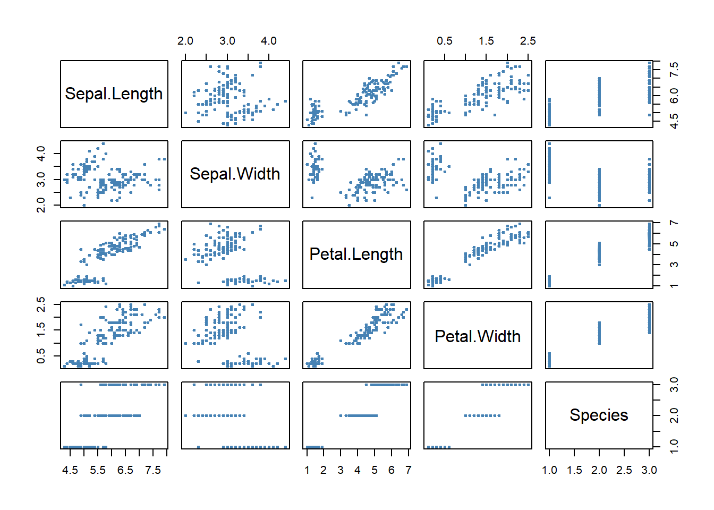

par (family="sans")
plot(iris, pch=20, cex=.75, col="steelblue")
This is Tamnala Briggs-Megafu’s website. Data projects are hosted here.
par(family=“Arial”)
Assignment #1
1). QT Movie rental downloaded, and new project created.
https://utdallas.yul1.qualtrics.com/survey-builder/SV_ewTQQWsSK3XjlMq/edit
2). Analyze Survey
a) How is the survey structured – There is a page break after the first block, and the entire survey is made up of 18 blocks
b) What is the questionnaire composed of – The questionnaire is composed of text graphic, multiple choice, and matrix table type questions.
c) How are the questions ordered – The questionnaire starts with a recruitment letter followed by a page break. This is followed by 12 questions about customers’ perceptions about the services received and followed by 4 questions about customers’ demographics.
3). Change the look & feel to include UT Dallas Header -
4). Use skip logic in Q4, if answer is NO, skip to the question Q7 “Do you feel comfortable purchasing software over the internet? What is the difference between Skip Logic and Display Logic?
Skip logic allows you to send the respondents to a future point in the survey based on how they answer a question while Display logic will display the selected question if certain criteria are met.
5. Apply validation to every question - force response
6. Insert page break to save respondents from scrolling down the screen
7) Reorganize the survey by blocks – moved Q6 to be just after Q4
ii) Apply display logic to one of the questions – Display logic applied to Q11 to reflect if customer selected already own a DVD playerfrom Q3
iii) Try out the Carry Forward features
iv) How to make the survey mobile friendly?
1) Add page breaks to every question – page break added to every question to make the survey mobile friendly
2) Apply validation to every question – Validation (force response) added to every question.
3) Reconsider Matrix table?
v) Add-on challenges
1) Add default choices
Default choices can be used to feature answer choices within a question when respondents open a survey. This can be used when you want respondents to update previously collected data, such as updating their contact addresses or changes in their names if they get married for example. Also, respondents can use this feature to give suggestions on the survey.
Assignment #2
The difference between the two programs comes down to intuition. If the purpose is to visualize data from a non social science research perspective GTrends is much better at doing this. However, if the goal is to both analyze and perform research the gtrends package is much better.
It would be interesting to perform an analysis importing the csv from google versus using the gtrends package.
Assignment #3
3a.: The Biden-Xi analysis allows for an understanding of what is going on within United States international relations and what revolves around the conversation. Terms like coronavirus and fentanyl stand out, because of the controversy surrounding COVID-19, as well as the flow of fentanyl into the United States that is in part due to the drug coming from the souther border being of Chinese origin. In addition to the aforementioned terms it is important to note the role of human rights and the tension between rising Chinese hegemony and the United States hegemonic position being challenged by it. Since the U.S. represents Western Liberal democratic order it is possible to see how human rights ties into the crises involving both Tibetans and Uyghers in China.
3b.: Looking over time, it is important to note that at least within the plot there is very little change in the use of the term “american” and this is very similar to the the use of the word “people”. Across time, these terms do not look like they change across time. There are however a couple of anomalies within the plot - The Trump 2017 speach being one of these instances, where his use of the term “american” is greater than everybody else. An explanation for this may be due to his populist platform that appeases to his voter base. A similar thing is found with people in both Johnson and Nixon regarding people, but a qualitative analysis may be necessary to know why they used these terms to the extent they did. For analyses regarding ideology it would be interesting to do a similar analysis between the term “communist” and “socialist” - I attempted an analysis and was not able to get a plot for it.
Assignment #5
There were issues in my ability to access this data. However, listed below is what it looked like. As you can tell there is an original ID and secret. Issues regarding third-party apps made it difficult to continue to the data analysis portion of the assignment.
# = Autenthication = # # # yt_oauth(“207302960577-7uqd83qilb3586f0dj77p2h4hq06kjs0.apps.googleusercontent.com”,“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”, token = ““)
yt_israelprotest = yt_search(term = “Israel protest”)
videocat_us= list_videocats(c(region_code = “us”)) # = Download and prepare data = # mostpop = list_videos()
mostpop_us = list_videos(video_category_id = “25”, region_code = “US”, max_results = 10)
nbcnews_stat = get_channel_stats(“UCeY0bbntWzzVIaj2z3QigXg”) nbcnews_detail = get_video_details(video_id = “to0YqKKRIWY”)
curl::curl_version() httr::set_config(httr::config(http_version = 0)) # Fix curl issue
nbc_videos1 = yt_search(term=““, type=”video”, channel_id = “UCeY0bbntWzzVIaj2z3QigXg”) nbc_videos = nbc_videos1 %>% mutate(date = as.Date(publishedAt)) %>% filter(date > “2022-11-27”) %>% arrange(date) samplecomment = get_comment_threads(c(video_id = “to0YqKKRIWY”), max_results = 600) samplecomment2 = get_all_comments(c(video_id = “to0YqKKRIWY”), max_results = 600) # = Comments, may take a long time # nbc_comments = lapply(as.character(nbc_videos1$video_id), function(x){ get_comment_threads(c(video_id = x), max_results = 101) })
yt_oauth(“207302960577-7uqd83qilb3586f0dj77p2h4hq06kjs0.apps.googleusercontent.com”,“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”, token = ““)
yt_israelprotest = yt_search(term = “Israel protest”)
videocat_us= list_videocats(c(region_code = “us”)) # = Download and prepare data = # mostpop = list_videos()
mostpop_us = list_videos(video_category_id = “25”, region_code = “US”, max_results = 10)
cnn_stat = get_channel_stats(“UCeY0bbntWzzVIaj2z3QigXg”) cnn_detail = get_video_details(video_id = “to0YqKKRIWY”)
curl::curl_version() httr::set_config(httr::config(http_version = 0)) # Fix curl issue
cnn_videos1 = yt_search(term=““, type=”video”, channel_id = “UCeY0bbntWzzVIaj2z3QigXg”) cnn_videos = nbc_videos1 %>% mutate(date = as.Date(publishedAt)) %>% filter(date > “2022-11-27”) %>% arrange(date) samplecomment = get_comment_threads(c(video_id = “to0YqKKRIWY”), max_results = 600) samplecomment2 = get_all_comments(c(video_id = “to0YqKKRIWY”), max_results = 600) # = Comments, may take a long time # cnn_comments = lapply(as.character(nbc_videos1$video_id), function(x){ get_comment_threads(c(video_id = x), max_results = 101) })
I can potentially use quanteda, but given the difficulty accessing third party apps it does not seem possible. It would be interesting to see a data scientist analyzing their own child do this.
Assignment #6
These are the wordclouds from the rscript textmining and the code used
# Data Method: Text mining # File: textmining1.R # Theme: Download text data from web and create wordcloud
# Install the easypackages package
install.packages("easypackages") library(easypackages)
# Download text data from website
mlkLocation \<-URLencode("http://www.analytictech.com/mb021/mlk.htm")
# use htmlTreeParse function to read and parse paragraphs
doc.html\<- htmlTreeParse(mlkLocation, useInternal=TRUE) mlk \<- unlist(xpathApply(doc.html, '//p', xmlValue)) mlk head(mlk, 3)
# Vectorize mlk
words.vec \<- VectorSource(mlk)
# Check the class of words.vec
class(words.vec)
# Create Corpus object for preprocessing
words.corpus \<- Corpus(words.vec) inspect(words.corpus)
# Turn all words to lower case
words.corpus \<- tm_map(words.corpus, content_transformer(tolower))
# Remove punctuations, numbers
words.corpus \<- tm_map(words.corpus, removePunctuation) words.corpus \<- tm_map(words.corpus, removeNumbers)
# How about stopwords, then uniform bag of words created
words.corpus \<- tm_map(words.corpus, removeWords, stopwords("english"))
# Create Term Document Matrix
tdm \<- TermDocumentMatrix(words.corpus) inspect(tdm)
m \<- as.matrix(tdm) wordCounts \<- rowSums(m) wordCounts \<- sort(wordCounts, decreasing=TRUE) head(wordCounts)
# Create Wordcloud
cloudFrame\<-data.frame(word=names(wordCounts),freq=wordCounts)
set.seed(1234) wordcloud(cloudFrame$word,cloudFrame$freq) wordcloud(names(wordCounts),wordCounts, min.freq=3,random.order=FALSE, max.words=500,scale=c(3,.5), rot.per=0.35,colors=brewer.pal(8,"Dark2"))The following is from the Winston Churchill speech, code and images
# Download text data from website wcLocation <-URLencode(“http://www.historyplace.com/speeches/churchill-hour.htm”)
doc.html<- htmlTreeParse(wcLocation, useInternal=TRUE) wc <- unlist(xpathApply(doc.html, ‘//p’, xmlValue)) wc head(wc, 3)
words.vec <- VectorSource(wc)
class(words.vec)
words.corpus <- Corpus(words.vec) inspect(words.corpus)
words.corpus <- tm_map(words.corpus, content_transformer(tolower))
words.corpus <- tm_map(words.corpus, removePunctuation) words.corpus <- tm_map(words.corpus, removeNumbers)
words.corpus <- tm_map(words.corpus, removeWords, stopwords(“english”))
tdm <- TermDocumentMatrix(words.corpus) inspect(tdm)
m <- as.matrix(tdm) wordCounts <- rowSums(m) wordCounts <- sort(wordCounts, decreasing=TRUE) head(wordCounts)
cloudFrame<-data.frame(word=names(wordCounts),freq=wordCounts)
set.seed(1234) wordcloud(cloudFrame\(word,cloudFrame\)freq) wordcloud(names(wordCounts),wordCounts, min.freq=3,random.order=FALSE, max.words=500,scale=c(3,.5), rot.per=0.35,colors=brewer.pal(8,“Dark2”)) ~~~
Code for running rvest01
#install.packages(“tidyverse”) library(tidyverse) #install.packages(“rvest”) library(rvest)
url <- ‘https://en.wikipedia.org/wiki/List_of_countries_by_foreign-exchange_reserves’ #Reading the HTML code from the Wiki website wikiforreserve <- read_html(url) class(wikiforreserve)
## At Inspect tab, look for
tag. Leave the table close ## Right click the table and Copy XPath, paste at html_nodes(xpath =)
foreignreserve <- wikiforreserve %>% html_nodes(xpath=‘//*[@id="mw-content-text"]/div/table[1]’) %>% html_table() class(foreignreserve) fores = foreignreserve[[1]]
names(fores) <- c(“Rank”, “Country”, “Forexres”, “Date”, “Change”, “Sources”) colnames(fores)
head(fores$Country, n=10)
library(stringr) fores\(newdate = str_split_fixed(fores\)Date, “\[”, n = 2)[, 1]
write.csv(fores, “fores.csv”, row.names = FALSE) ~~~
Image of csv “Fores”
Script rvest02
library(tidyverse) # install.packages(“rvest”) url1 = “https://www.imdb.com/search/title/?release_date=2022-01-01,2023-01-01” imdb2022 <- read_html(url1) rank_data_html <- html_nodes(imdb2022,‘.text-primary’) rank_data <- as.numeric(html_text(rank_data_html)) head(rank_data, n = 10) title_data_html <- html_nodes(imdb2022,‘.lister-item-header a’) title_data <- html_text(title_data_html)
head(title_data, n =20)
The difficulty of this is that I am unsure as to how to make this visual.
Assignment #7
Code for first part of govdata with output
## Scraping Government data
## Website: GovInfo (https://www.govinfo.gov/app/search/)
## Prerequisite: Download from website the list of files to be downloaded
## Designed for background job
# Start with a clean plate and lean loading to save memory
gc(reset=T)
rm(list = ls())
#install.packages(c("purrr", "magrittr")
install.packages("purr")
install.packages("magrittr")
library(purrr)
library(magrittr)
## Set path for reading the listing and home directory
## For Windows, use "c:\\directory\\subdirectory"
library(readr)
govfiles= read_csv("govinfo-search-results-2023-12-05T16_37_50.csv")
View(govfiles)
# Directory to save the pdf's
save_dir <- "C:\\epps6302\\pdf"
# Function to download pdfs
download_govfiles_pdf <- function(url, id) {
tryCatch({
destfile <- paste0(save_dir, "govfiles_", id, ".pdf")
download.file(url, destfile = destfile, mode = "wb") # Binary files
Sys.sleep(runif(1, 1, 3)) # Important: random sleep between 1 and 3 seconds to avoid suspicion of "hacking" the server
return(paste("Successfully downloaded:", url))
},
error = function(e) {
return(paste("Failed to download:", url))
})
}
# Download files, potentially in parallel for speed
# Simple timer, can use package like tictoc
start.time <- Sys.time()
message("Starting downloads")
results <- 1:length(pdf_govfiles_url) %>%
purrr::map_chr(~ download_govfiles_pdf(pdf_govfiles_url[.], pdf_govfiles_id[.]))
message("Finished downloads")
end.time <- Sys.time()
time.taken <- end.time - start.time
time.taken
# Print results
print(results)118th Congress Congressional Hearings in Committee on Foreign Affairs csv
A main issue with the parallel R file is the issue of cores and difficulty with overcoming this and constantly receiving and error. Code Below and output as well
library(parallel) library(pdftools)
read_pdf_to_text <- function(uri) { text <- pdftools::pdf_text(uri) return(text) } # For mac
pdf_texts <- mclapply(pdfpath, read_pdf_to_text, mc.cores = num_cores) toc()
library(parallel) library(pdftools) # Get the number of cores available on your machine num_cores <- detectCores()
cl <- makeCluster(num_cores)
clusterEvalQ(cl, library(pdftools))
read_pdf_to_text <- function(uri) { text <- pdftools::pdf_text(uri) return(text) }
tic() pdf_texts <- parLapply(cfa_ch, read_pdf_to_text, mc.cores = num_cores) toc()
stopCluster(cl)
Assignment #8
A couple of observations regarding setting up the census data key. First, it is a relative simple process. However, the second, it is much faster if one does not use an .edu email.
My key is: 311dcd5892541c0eaa28747e5024f1e308c5xxxx
Below are 2019 and 2009 codes and images. Although the assignment asks for 2020, this is not available.
acs19 = tidycensus::load_variables(2019, “acs5”, cache = TRUE) acs19_Profile = load_variables(2019 , “acs5/profile”, cache = TRUE) us_median_age19 <- get_acs( geography = “state”, variables = “B01002_001”, year = 2019, survey = “acs1”, geometry = TRUE, resolution = “20m” ) %>% shift_geometry()
plot(us_median_age19$geometry) ggplot(data = us_median_age19, aes(fill = estimate)) + geom_sf(col=“white”) + # Why color is white? theme_bw() + scale_fill_distiller(palette = “PuBuGn”, # Try other palette? direction = 1) + labs(title = ” Median Age by State, 2019”, caption = “Data source: 2019 1-year ACS, US Census Bureau”, fill = ““, family=”Palatino”) + theme(legend.position=c(.08,.6), legend.direction=“vertical”) + theme(text = element_text(family = “Palatino”), plot.title = element_text(hjust = 0.5))
acs09 = tidycensus::load_variables(2009, “acs5”, cache = TRUE) acs09_Profile = load_variables(2009 , “acs5/profile”, cache = TRUE) us_median_age09 <- get_acs( geography = “state”, variables = “B01002_001”, year = 2009, survey = “acs1”, geometry = TRUE, resolution = “20m” ) %>% shift_geometry()
plot(us_median_age09$geometry) ggplot(data = us_median_age09, aes(fill = estimate)) + geom_sf(col=“green”) + # Why color is white? theme_bw() + scale_fill_distiller(palette = “PuBuGn”, # Try other palette? direction = 1) + labs(title = ” Median Age by State, 2009”, caption = “Data source: 2009 1-year ACS, US Census Bureau”, fill = ““, family=”Palatino”) + theme(legend.position=c(.08,.6), legend.direction=“vertical”) + theme(text = element_text(family = “Palatino”), plot.title = element_text(hjust = 0.5))
There are states where we can observe age go up such as Nevada, Arizona, and New Mexico. We see a very similar trend in Puerto Rico. This may be due to the retirees heading to these locations.